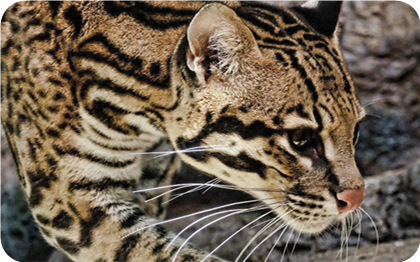
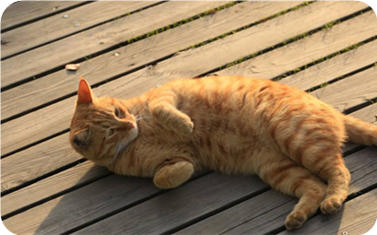

喵窝.
简介与吸猫
-

本人-Siner
此站点（喵窝），于2018年5月10号创下，给爱吸猫爱撸猫人员的栖息地，本人也是一名喵奴，猫咪爱好者表示橘猫是真的胖。
本站点有留言板功能在，以供所有热爱吸猫人员与热爱撸猫人员留言交流（emm实际上撸猫和吸猫是同一种东西？不同说法）。那么啥是吸猫呢？通常所知，吸猫是一个网络用语，指的是宠物猫的主人对猫咪的喜爱动作，包括对猫猫亲亲抱抱甚至忍不住使劲儿嗅等。但是，吸猫最早的说法是“吸猫体质”，形容的那些天生就会收到猫咪喜爱和欢迎的一群人，逐渐演变成今天的“吸猫”一词，其含义也跟之前发生了变化。人们把从猫身上获得的满足感称为“治愈”，每一个喜欢猫的人都能说出好几个被猫治愈的小故事，而蕴藏在其中的情感像一根透明的线，微妙地把人和猫这两个物种紧密地牵引到一起。这些毛茸茸的小宠物，正以势不可挡的速度占领现代人的生活。
所以...这个时代，可爱就是正义。
-

那接下来做一个解答————被吸的为什么是猫
在BBC的系列纪录片《猫科动物的故事》里，专家解读说，猫因为拥有大眼睛、短鼻梁和小小的嘴巴，与婴儿的形象较为接近。和婴儿一样，猫的可爱能够刺激人的大脑释放感觉良好的多巴胺，使人的态度变得友好、温柔，这被研究者称为“可爱回应”。正是因为这种“可爱回应”，让大多数人喜欢上猫这种生物。
除了长相之外，猫的一些表情和动作也成为让它们在互联网蹿红的理由。猫的面部神经较少，很多动作是没有含义的，拍摄的人捕捉到一些猫的瞬间将其制作成图片或视频，并配以文字使其人格化，看的人也会将情感投射其中，继而引发转发、点赞和评论的行为。
猫的活动半径小，驯化时间比狗短，即便是家养猫，在个性上也保留了一些野性，因此与狗“热情”地扑上来讨好主人不同，猫显得更加高冷和独立，这也成为许多吸猫爱好者喜欢猫的一个理由。也是为什么被吸的不是别的动物，而是猫的原因之一。
所以，吸猫无罪！吸猫万岁！这里是喵窝~喵咪赛高！(
橘猫真胖)